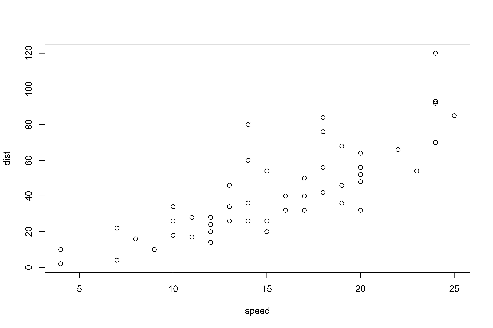

Today marks the beginning of what I imagine will be a long journey, with a significant number of hiccups & frustrations along the way. The end goal I have is to build out an election forecast model (in the spirit of FiveThirtyEight & The Economist), but along the way, I plan on getting better at a few things:
Writing : while I’ve never been a poor writer, I’ve always gravitated more toward math & science, & in my career as an engineer, a good amount of my communication has been visual. If possible, I’ve always preferred to leave words off the page & have a chart speak for me. While I still think that, in general, its better the explain a concept visually (a picture vs. a thousand words, and all), I also believe supplementing a visual with my a well written analysis & opinion can improve its reception.
Stats : in my current job, almost everything I model is deterministic, rather than probabilistic (physical systems tend to behave the way that natural laws expect them to). It has been a long time since I’ve done any sort of stats work (& it was all basic introductory analyses), so I expect an uphill battle with getting my head wrapped around Bayes’ Theorem, Monte Carlo simulations, Brier’s Tests, etc.
Coding : most of my experience in coding is with VBA - typically just for manipulating data in Excel. I’ve built out a good number of forms using VBA, but don’t typically tend to dig into anything far beyond simple manipulation. The front end of Excel is effectively setup as a visual programming tool, so there’s not a great incentive to do much array manipulation outside of the spreadsheet. Excel is a wonderful tool, & is sufficient for my current job, but I’ve definitely found where its limits lie. I’m excited to dig into R, the stats based program that seems almost to be designed specifically for what I’d like to do.
The First Plot
R has a few sample datasets, and r:base includes a pretty basic plot function. With the sample set, cars, I made a quick plot of the stopping distance vs. the speed.
Code
plot(cars)

Citation
BibTeX citation:
@online{rieke2021,
author = {Mark Rieke},
title = {Baby {Steps}},
date = {2021-01-10},
url = {https://www.thedatadiary.net/posts/2021-01-10-baby-steps},
langid = {en}
}